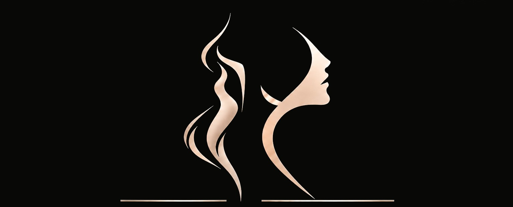
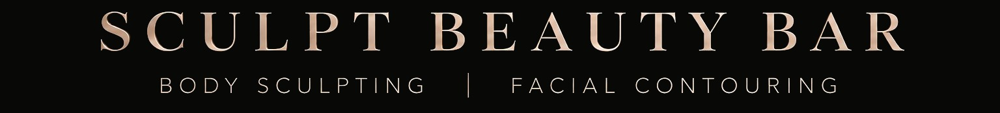
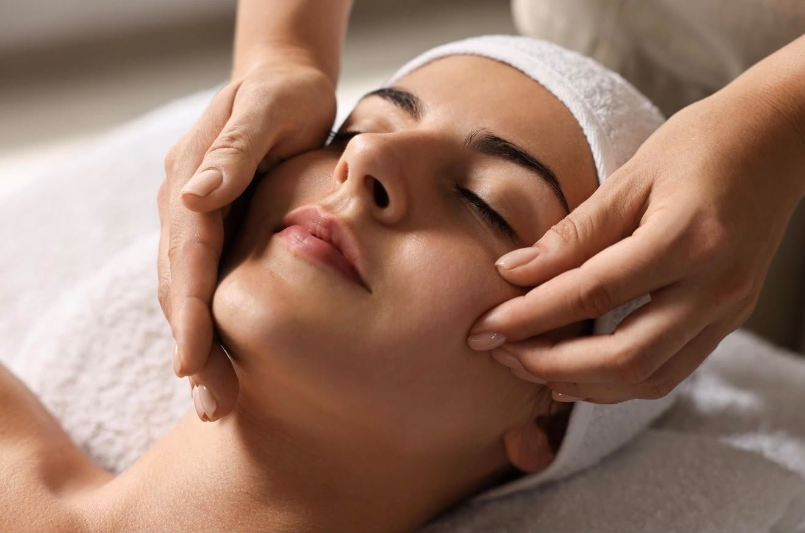
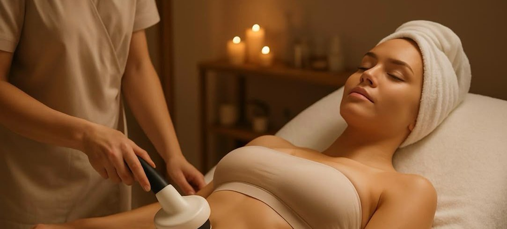
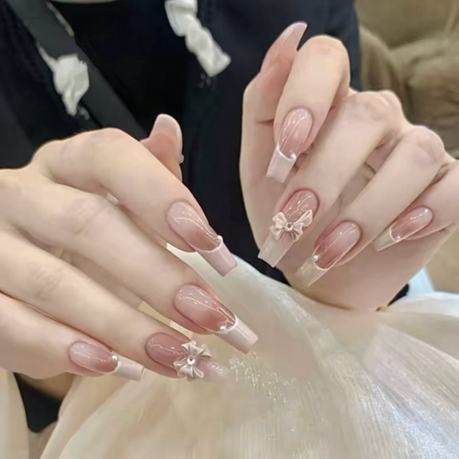
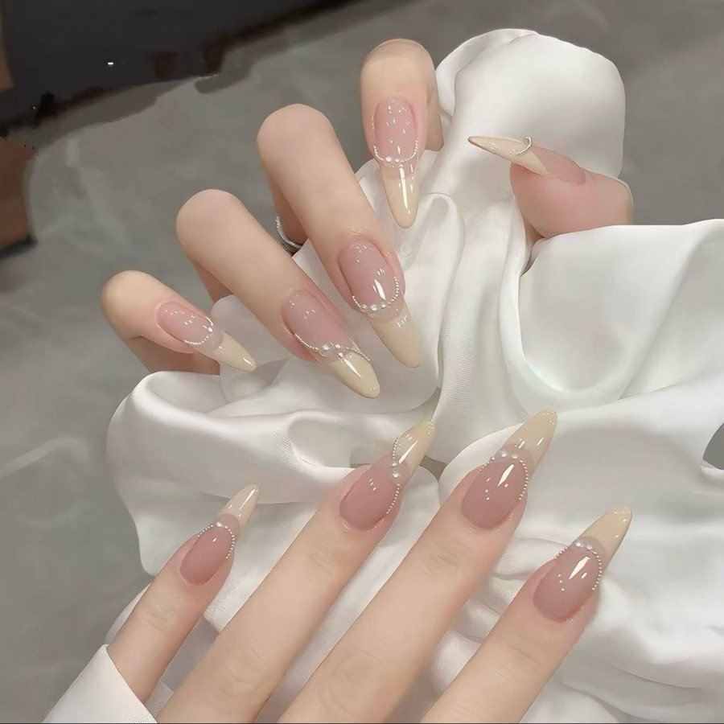
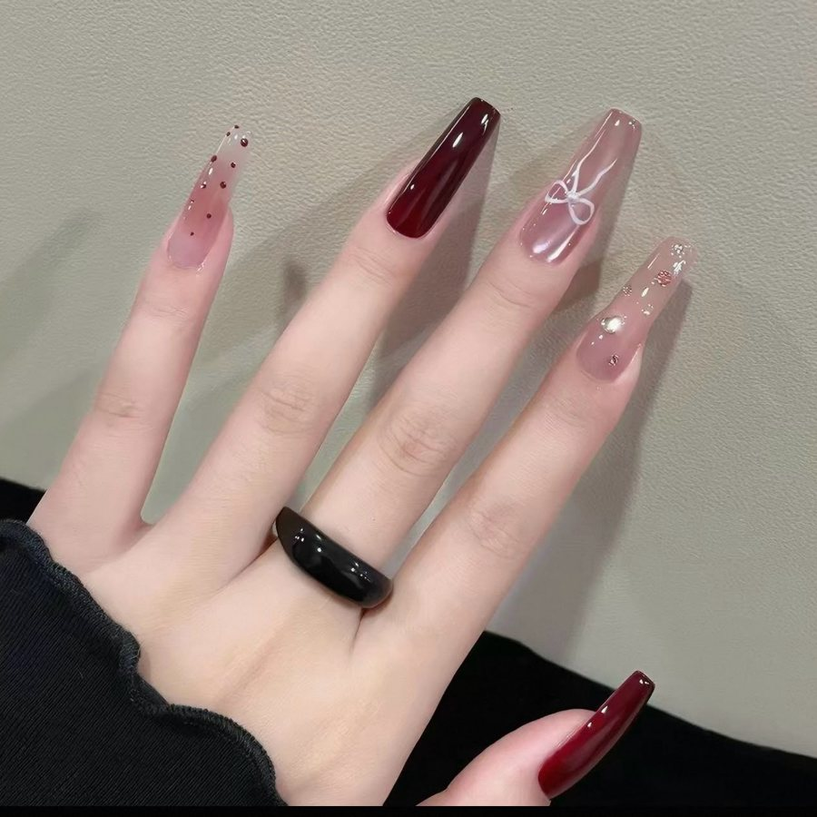
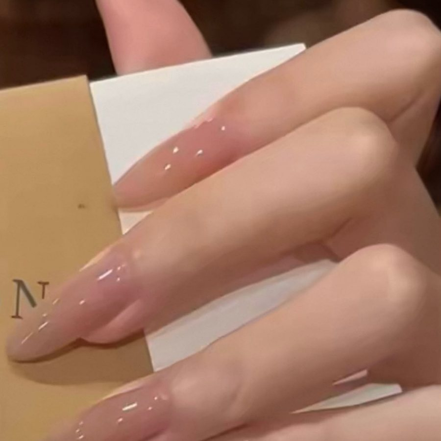

01
COLLAGEN LIFT
胶原提升系列
- Collagen Firming & Lifting 胶原紧致提拉护理
A revitalising treatment designed to refine facial contours and leave skin looking firmer, smoother, and more supple.
S$138S$298现价 · 原价

朔美
专业面部 · 身体塑形
Where TCM wisdom meets German Nanotechnology on
Face Lifting. Face Reshaping. Body Slimming.
Artistry by hand, guided by intention.
A serene space to refine your contours, rediscover your elegance — and begin again.
专业塑形 雕琢自然之美
OUR NAME · 品牌理念
「朔」 marks the new moon — a new beginning. 「美」 is the essence of beauty. Together, 朔美 is a promise: every visit is a step towards a more defined, confident you.
「朔」，寓意新月，象征崭新的开始。
「美」，是美的本质与真谛。

面部雕塑 · 小颜提升
专注小颜塑形与面部提升，以专业手法为本，仪器辅助为辅，秉持温和、细致、专注的护理理念。
通过细致的面部护理与轮廓塑形，帮助改善面部线条的视觉表现，呈现自然、紧致、流畅的轮廓之美。
以匠心雕琢细节，以专业诠释优雅，让美回归自然，让自信由内而外绽放。
身体雕塑 · 纤体管理
以中医养护理念为基础，结合现代身体管理仪器，注重经络养护、身体循环与体态线条的综合护理。
通过专业、细致的身体管理，帮助塑造更流畅的身体线条，展现轻盈、匀称与自信之美。
由内调养，由外雕塑，以专业护理诠释身体线条之美。

TREATMENTS · 疗程
01
胶原提升系列
A revitalising treatment designed to refine facial contours and leave skin looking firmer, smoother, and more supple.
S$138S$298现价 · 原价
02
日式小颜塑颜护理
A Japanese-inspired, hands-on contouring treatment designed to refine the appearance of the jawline and create a more balanced, defined facial silhouette.
S$198S$980现价 · 原价
03
经络纤体系列
A hands-on body treatment incorporating meridian techniques and lymphatic drainage massage to help ease the feeling of puffiness and refine the appearance of your natural contours.
04
艺术美甲
An artful expression of individuality, adorned with delicate details, dimensional accents and considered embellishments.
FROMS$68 – S$88




BEFORE & AFTER · 真实效果
Individual results vary. 效果因人而异。
STEP 01
We begin by understanding your beauty goals, concerns, and individual needs.
STEP 02
A tailored treatment approach thoughtfully designed around your needs and preferences.
STEP 03
Relax and unwind as our therapist performs your chosen hands-on treatment with care and precision.
STEP 04
Receive simple, practical guidance to help maintain your skin’s appearance and support your ongoing self-care.
VISIT US · 预约到店
Every transformation begins with a moment for yourself.
By appointment only. Connect with us on WhatsApp to arrange your personalised beauty experience.
TESTIMONIALS · 顾客好评
From our clients’ reviews on Carousell